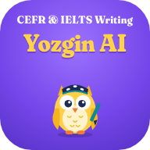

Yozgin AIMultilevel Task 2: fikr bildirish (180-200 so'z)
Multilevel Task 2 eng katta topshiriq: biror mavzu bo'yicha fikringizni blog yoki forum posti sifatida yozasiz, 180-200 so'z. Bu topshiriq eng ko'p ball beradi (0-6), shuning uchun unga ko'proq vaqt ajrating.
Task 2 tuzilishi
- Kirish: mavzuni o'z so'zlaringiz bilan aytib, fikringizni bildiring.
- 1-asosiy qism: birinchi sabab, tushuntirish va misol.
- 2-asosiy qism: ikkinchi sabab yoki boshqa tomonning fikri va unga javob.
- Xulosa: fikringizni qisqa takrorlang.
Yuqori ball uchun
- Har bir abzatsda bitta asosiy fikr.
- Bog'lovchilar: On the one hand, Moreover, For example, As a result, To sum up.
- Turli grammatik tuzilmalar: shart gaplar, passiv, murakkab gaplar.
- Mavzuga oid aniq so'zlar, takrorlarsiz.
Yangi alifboda qisqacha
Task 2: 180-200 sözli blog yoki forum posti. Kiriş, ikki asosiy qism va xulosa. Platformada yozing, AI ball beradi.
Savol-javob
Multilevel Task 2 necha so'z?
180-200 so'z.
Task 2 necha ball?
0 dan 6 gacha, ya'ni yozish bo'limidagi eng katta ball.
Task 2 ni qanday tekshirsam bo'ladi?
Yozgin AI platformasida javobingizni yozing yoki rasmini yuklang. AI mezonlar bo'yicha baho beradi va xatolarni matnning o'zida ko'rsatadi.
Muallif: Sayyora Soleyeva, Samarqand davlat chet tillar instituti magistranti. Aloqa: soleyevasayyora7@gmail.com, Telegram @Sayyora_Sunnatilloyevna. Ballar mashq uchun taxminiy, rasmiy natija emas.